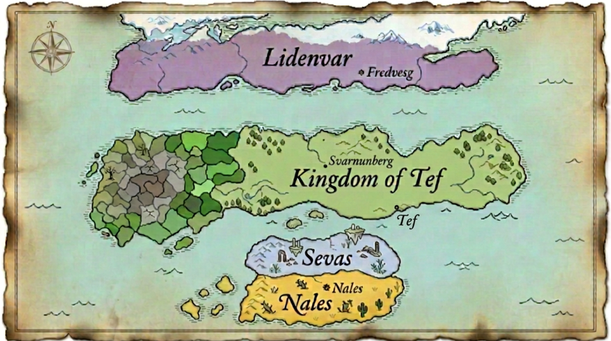

— The Shattered Ivory —
Folio the First. Click upon any realm to uncover its cartography.

✦ Hover to reveal, click to journey ✦
The Realm of
The detailed atlas of this realm is yet to be inscribed.